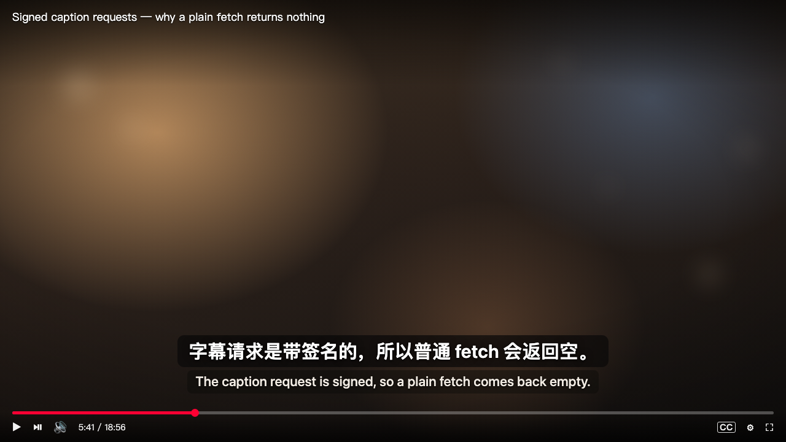
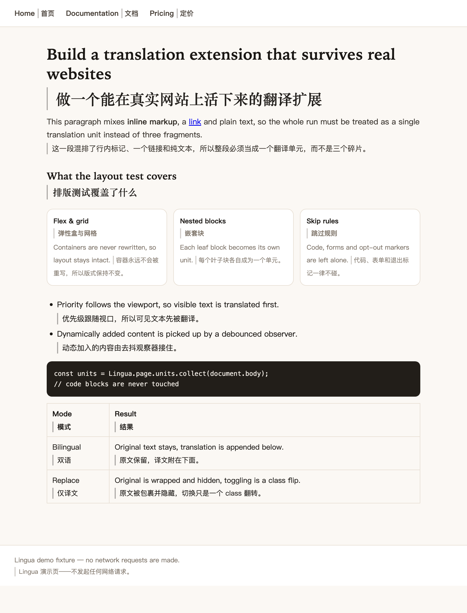
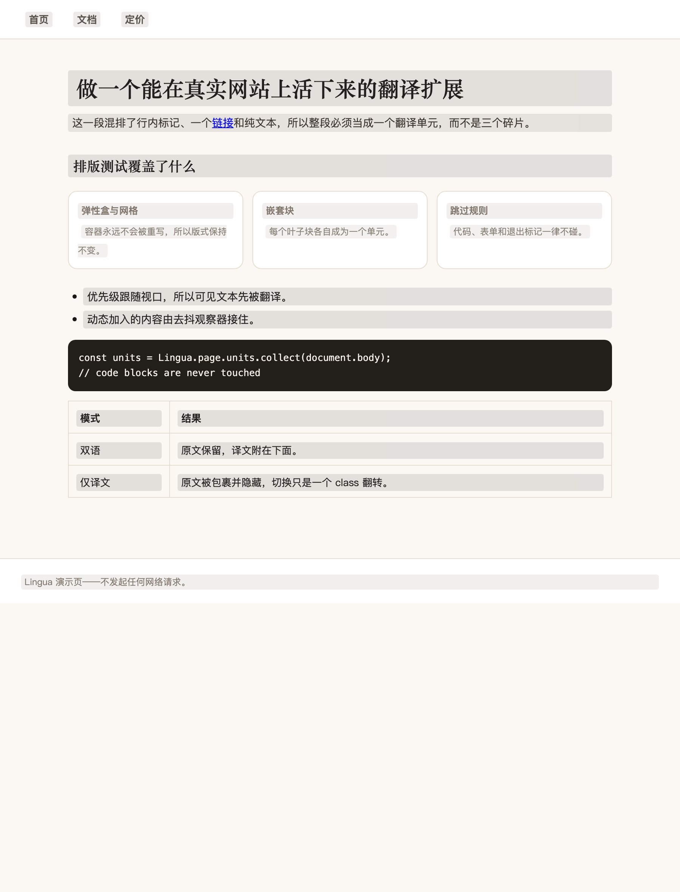
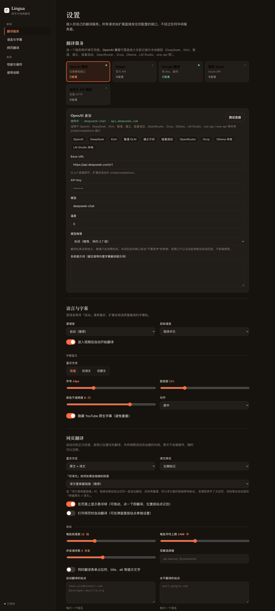
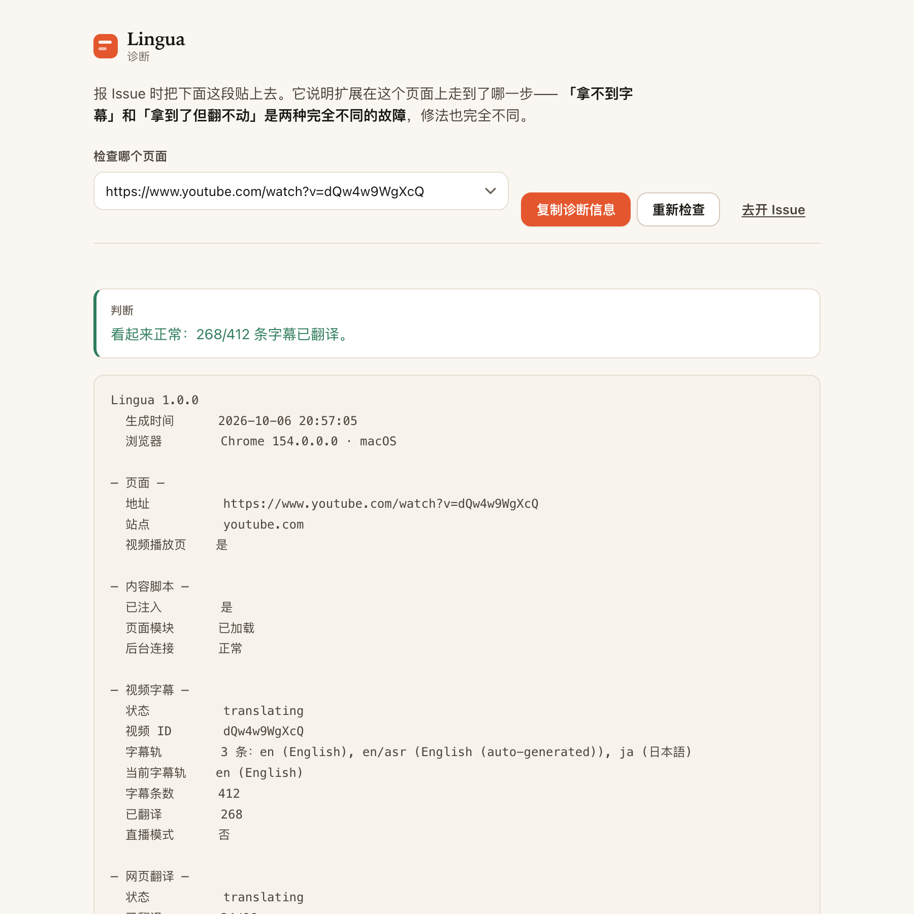

Whole-track scheduling 整轨调度
The first batch is deliberately small, then translation moves ahead of playback. 首批请求刻意保持较小，随后翻译会持续推进到播放位置之前。
Translate YouTube in sync and rewrite web pages without overwriting the original. 同步翻译 YouTube 字幕，并在不破坏原文的前提下翻译网页。

Lingua reads the full caption track, translates around the playhead first, and reorders work when you scrub. Lingua 读取整条字幕轨，优先翻译播放位置附近的内容，拖动进度条后会重新排序。
The first batch is deliberately small, then translation moves ahead of playback. 首批请求刻意保持较小，随后翻译会持续推进到播放位置之前。
If the whole track arrives too late, Lingua can read the caption lines the player renders. 如果整条字幕轨来不及返回，Lingua 可以读取播放器已经渲染的字幕行。
Pin the source when automatic track selection guesses wrong. 自动选轨判断错误时，可以直接固定源语言。
Choose bilingual or translated-only. The original remains in the DOM and returns with one class change. 可选双语或仅译文。原文始终留在 DOM 里，一次 class 切换就能恢复。
The translated link is the original element, not a clone. 译文里的链接沿用原始元素，不是复制出来的空壳。
Preformatted code, forms, editable regions, and opt-out markers are skipped. 代码块、表单、可编辑区域和明确标记为不翻译的内容都会跳过。
A debounced observer picks up content added after the first pass. 去抖观察器会继续接住首轮之后新增的内容。


Text goes directly from your browser to the provider you configure. Keys, settings, and cache stay in local extension storage. 文本从浏览器直接发往你配置的服务。Key、设置和缓存都保存在扩展本地存储里。
Cloud providers: 云端服务： the request follows your provider and your key. 请求直接走你选择的服务和 Key。
Local providers: 本地服务： Ollama and LM Studio can keep the text on your machine. Ollama 和 LM Studio 可以让文本留在本机。


The diagnostics page reports the content script, worker, caption track, provider response, and translated count. 诊断页会报告内容脚本、后台 worker、字幕轨、服务响应和翻译数量。
The copied report contains no API key and no translated text. 复制出的报告不包含 API Key，也不包含译文正文。
OpenAI-compatible, DeepL, Google, Microsoft Azure, or any HTTP endpoint you can describe. 支持 OpenAI 兼容、DeepL、Google、微软 Azure，也能描述任意 HTTP 接口。
See configuration examples 查看配置示例Set the URL, method, headers, body template, and the response path for the translated text. 自行设置 URL、方法、请求头、请求体模板，以及从响应中取译文的位置。
The caption path depends on player internals and is not covered by continuous integration. The repository publishes smoke-test measurements instead of promising permanent access. 字幕链路依赖播放器内部行为，无法放进持续集成。仓库会公布实测结果，而不是承诺永久可用。
The current package targets Chrome and Edge. A Firefox port would need its own Manifest V3 implementation. 当前安装包面向 Chrome 和 Edge，Firefox 需要单独实现 Manifest V3 支持。
Iframes and text inside images are not translated. The extension skips both rather than silently changing the wrong context. iframe 和图片内文字不会翻译。扩展会跳过它们，而不是悄悄改错上下文。
chrome://extensions, enable Developer mode, and choose Load unpacked.
打开 chrome://extensions，启用开发者模式，然后选择“加载已解压的扩展程序”。
Verify the published archive 校验已发布的压缩包
shasum -a 256 -c lingua-0.2.3.zip.sha256